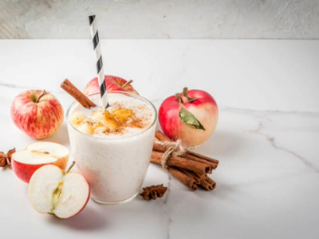

Apple Smoothie

Description
Apple smoothie is a fabulous blend of flavors and nutrition, combining the crisp sweetness of apples with creamy goodness. What makes it truly exceptional is its perfect fusion of taste and health benefits. Apples offer a wealth of dietary fiber and antioxidants, making this smoothie both delicious and a nutritious choice for a quick and satisfying snack or breakfast.
Ingredients:
- 2 medium-sized apples, peeled, cored, and chopped
- 1/2 cup plain Greek yogurt
- 1/2 cup unsweetened apple juice
- 1 ripe banana
- 1 tablespoon honey (optional, for added sweetness)
- 1/2 teaspoon ground cinnamon
- 1/4 teaspoon vanilla extract
- Ice cubes (optional, for a colder smoothie)
Steps:
- Begin by preparing your apples. Peel them, remove the cores, and chop them into smaller pieces.
- Place the chopped apples, Greek yogurt, apple juice, milk, ripe banana, honey (if using), ground cinnamon, and vanilla extract into a blender.
- If you prefer a colder smoothie, you can also add a few ice cubes at this stage.
- Blend all the ingredients on high until the mixture is smooth and creamy. If the consistency is too thick, you can add a little more milk to reach your desired thickness.
- Once blended to your satisfaction, pour the apple smoothie into a glass and serve immediately.
Enjoy your delicious and nutritious apple smoothie!